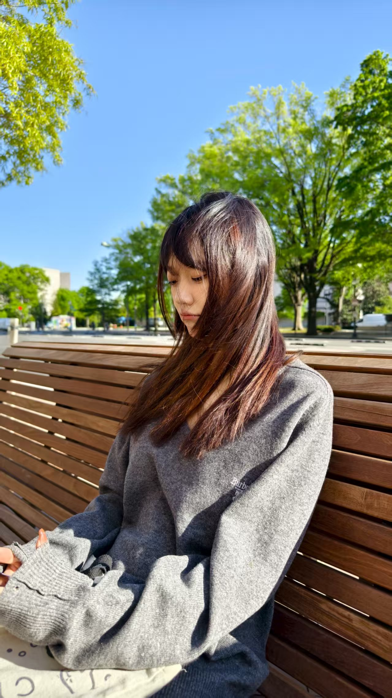
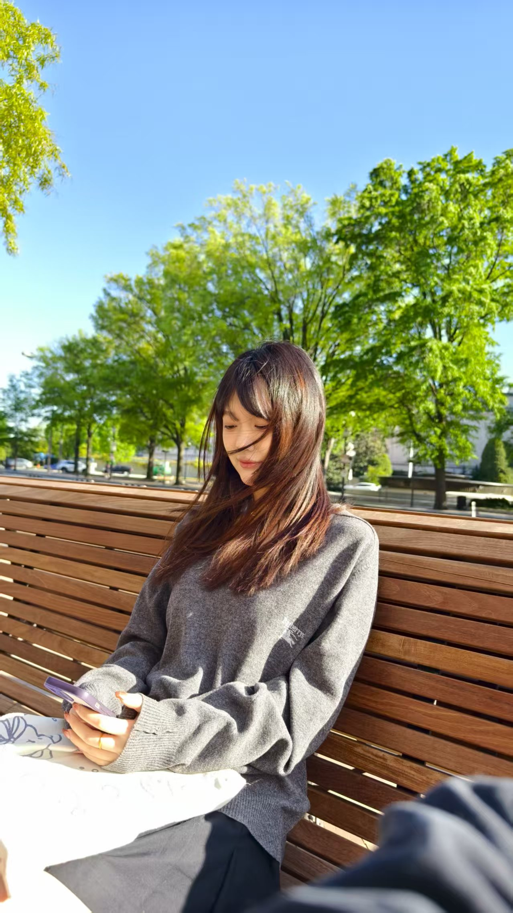

距离上一次给你写信已是一年前，我想我每一年都会如此。 亲爱的，我一直觉得见面是乏味的现实里最浪漫的事情，与你见面让时空变得特别又珍贵。 期盼见面的过程可以让痛苦变得微不足道，与我有着同样相思的你能一直与我奔走在一起，这足以让我有勇气面对前行的路。 于是我尝试将信中文字聚敛成传递爱的语言，很多人以为爱是一种抵达，抵达婚姻，抵达身体，抵达未来。我想，真正的爱不是对结果的贪婪，而是对存在的深刻认知。不论日升月落裹挟下的未来生活如何，我们之间的爱会永远坚固。 你有时候淡淡的好像湖面的水一样平静，情绪也偶尔淡淡的像湖面一样少有较大的起伏波动，但我知道水面下藏着许多细小的涟漪，是说不出口的烦恼和心事，我感觉这常常是精神层面的过载，是大脑里那台永不停止的“翻译机”暂时需要停机维护。在我面前，你可以关掉它，不需要费力解读潜台词，不需要时刻调整自己的频率去适应我。爱是主动的行动，而不是被动的情感，爱是关心责任、尊重和了解。你需要的，可能是一个不用“翻译”的安全港湾，而我很庆幸能成为这片港湾本身。你之前很悲观，不相信承诺，不相信所谓永远，总是做好任何人都会随时离开的准备。我想，爱情里更多的是感性先行，我不是不害怕被辜负被伤害，但这个人是你，我愿意去承担错爱的后果。我会去了解你的家庭，你的成长环境，过去的经历还有你所遭遇过的痛苦与不幸，我试图感受你曾经有过的感受。我们每个人对世界，都是从缝隙的一角窥视，看到的大小有限，两个缝隙拼在一起，再一起探索世界，这是我心里相遇和相爱的意义。一个人时，我爱我自己，自从有了你，我会爱你如同爱我自己，也想你无需时时刻刻担心自己“不再被爱”，就算一万个人否定你，我也肯定你。每次想说爱你的时候，是在这日复一日的生活中，有很多个瞬间我都觉得真的好爱你。也许某天，我们牵手都会变得平平常常，不再心跳加快，可我依旧爱你，从遇见你的那天起，从未消减。 泪失禁体质最富有的事物，是你的眼泪。每次我们分别时，你像一只受了委屈的小猫，扑进我的怀里，忍不住放声大哭起来，泪水滴答滴答打湿了我的胸口，哭声里满是依赖。你看，其实我们每次分开的苦难，可以看作是花开的伏笔，严寒的冬日之后就会是鲜花簇拥的春天和爱意弥漫的未来。你知道吗，你的性格里有一种温柔的力量，敏感、细腻，每一个拥抱，每一次注视的眼神，都像细碎的光慢慢照进我的心里。柔和且清冷的看透世间万物的善与恶，却依然以温柔礼貌示人。你很会给自己充电，有很多的爱好，很多的充电方式，会安排好自己的周末，也或是选择在家里躺上一天。总是播放着自己看过很多遍的动画片，好像熟悉的东西总能让你感到无比的心安。你是我们生活的记录者，相册里有很多充满生活气息的照片，每次一起吃过的饭，随手的一拍却是治愈我们日后的一点一滴。你很爱拍落日，喜欢关于美好景色的一切，你说这些会让你感到平静和心安。 记得有一次在我们聊到腊肠小🐕的时候，你突然沉默了许久，我知道，你又在为所有没被好好对待的小动物们难过了。你的共情是与生俱来的天赋，细腻的人最内耗，高敏感是天赋也是枷锁。敏感像一层薄纱，裹着一颗总在替世界操心的心。可能你需要的从不是“别多想”，而是有人愿意站在那层纱外面，轻轻说一句“我看见你的难过了”。我知道你会把焦虑揉成纸团扔进废纸篓，到深夜再悄悄抚平。习惯把情绪按静音键，生怕打扰到任何人。也许永远都停止不了自己的精神内耗。不开心时不爱说话，我想说，在我这里你不必总是那么懂事，不必永远做先伸手拥抱的人。可以发呆，可以脆弱，可以落下那些没被接住的眼泪。我已不年轻、不轻浮、不躁动、不孩子气了，也慢慢学着做一个能真正让你依靠的爱人，希望能看起来聪明又正经，然后被你称呼为“我的爱人”。在我这里，你那些细碎的不安、突然的沉默都不会被误解为疏离。你只需要做那个看到可怜的小动物会流泪、喝着咖啡对着窗外会发呆，在看到落日时会拿起手机拍照的你，所有的情绪和爱，从来都值得被我同样具体，同样郑重地接住。
 
For フルーツバスケット-冈崎律子 とてもうれしかったよ 内心其实非常的高兴 君が笑いかけてた 当你对我笑时 すべてを溶かす微笑で 你灿烂的笑容能融化一切 春はまだ远くて 虽然距离春天还很远 つめたい土の中で 种子还在冰冷的土地里 牙吹く瞬间（とき）を待ってたんだ 等待着发芽的那一瞬间 たとえば苦しい今日だとしても 即使今天过得并不开心 昨日の伤を残していても 即使还残留着昨天的伤痛 信じたい 心ほどいてゆけると 我还是相信 你会向我敞开心扉 生まれ変わることはできないよ 虽然从前的往事无法重新来过 だけど変わってはいけるから 但是今天的我却已经因为你而改变 Let's stay together いつも 让我们永远在一起吧 仆だけに笑って 只为我微笑 その指で ねぇ触って 用指尖触碰我 望みばかりが果てしなく 空有理想难免虚无缥缈 やさしくしたいよ 只想成为一个温柔的人 もう悔やまぬように 这样我们就不再后悔 叹きの海も越えていこう 让我们一同跨越叹息的海洋 たとえ苦しい今日だとしても 即使是今天痛苦仍然充斥着你我 いつかあたたかな想い出になる 总有一天 它会成为温馨的回忆 心ごとすべてなげだせたなら 只要我们的心同时被感动 ここに生きている意味がわかるよ 我已经明白生存在这的意义 生まれおちた歓（よろこ）びを知る 也了解诞生于世上的快乐 Let's stay together いつも 让我们永远在一起吧